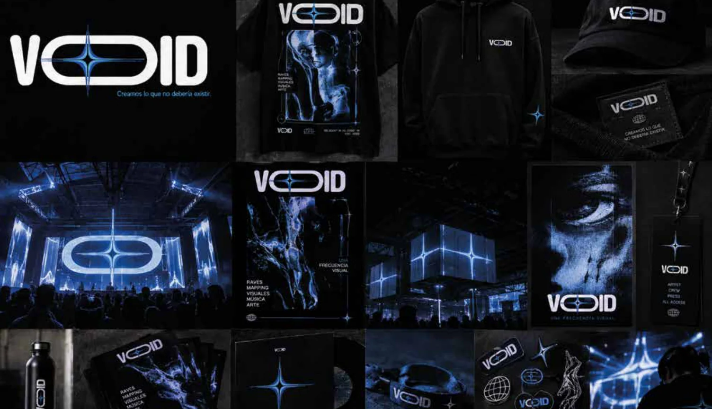

NICXART / PROYECTO 01VOID Portafolio creativo / NICXART Studio
Ideas con
un giro
propio.
Diseño, imagen y movimiento en un mismo lugar. Bienvenido a un espacio donde las ideas toman forma y la creatividad tiene personalidad.
✳ IMAGINAR · CREAR · COMPARTIR
 NICXART STUDIO
NICXART STUDIOIDENTIDAD✳FOTOGRAFÍA✳MOTION✳DISEÑO WEB
01 / Selección creativaProyectos
Proyectos
destacados.
Una colección de ideas, estilos y formatos. Cada proyecto presenta un trabajo creativo.


02 / La mente detrás de NICXARTNo sigo ideas.
No sigo ideas.
Las transformo.
NICXART Studio es mi universo creativo personal. Aquí reúno proyectos que exploran la identidad visual, la fotografía, el contenido audiovisual y las experiencias digitales. Cada pieza es una forma diferente de comunicar.
Más sobre mí01 / EXPLORARInvestigar, observar y buscar ideas.
02 / CREARConvertir conceptos en piezas visuales.
03 / CONTARDar sentido y personalidad al resultado.
03 / Lo que me inspiraMi universo
Mi universo
creativo.
Distintas disciplinas, una misma intención: crear piezas visuales con intención y carácter.
Identidad visual
Logotipos, sistemas gráficos y diseño de marca.
Fotografía
Retratos, fotografía creativa y narrativas visuales.
Audiovisual
Edición, motion graphics y piezas en movimiento.
Diseño web
Interfaces y experiencias para pantalla.
04 / Siguiente idea¿Creamos algo
¿Creamos algo
increíble?
Todo empieza con una idea. Lo interesante es descubrir hasta dónde puede llegar.
Ir a contacto